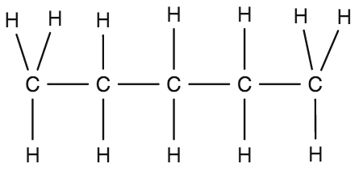

| Parameter | Alkene | Alkene | Alkine |
|---|---|---|---|
| 1. Allgemeine Sufo | \(C_{n}H_{2n+2}\) | \(C_{n}H_{2n}\) | \(C_{n}H_{2n-2}\) |
| 2. Bindungsart und -winkel |
|
|
|
| 3. Isomere |
Am Beispiel Pentan \(CH_3-CH_2-CH_2-CH_2-CH_3\) Konstitutionsisomerie\(\begin{matrix} & CH_{ 3 } & \\ & | & \\ CH_{ 2 }- & CH & -CH_{ 2 }-CH_{ 3 } \end{matrix}\) 2-Methyl-Butan Konformationsisomerie |